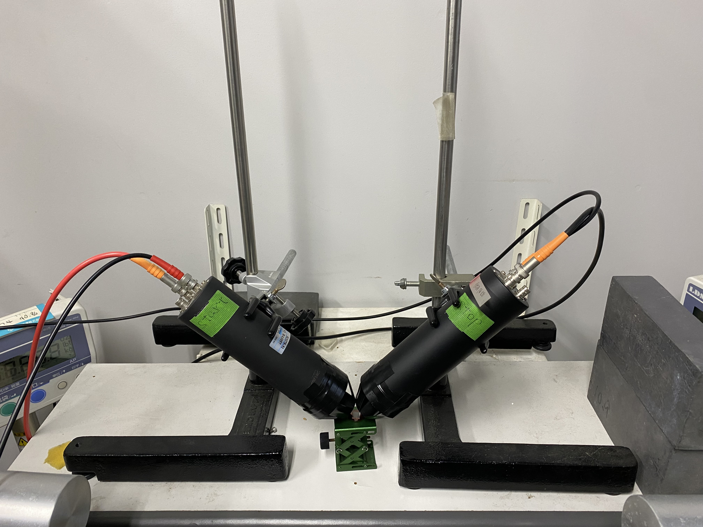
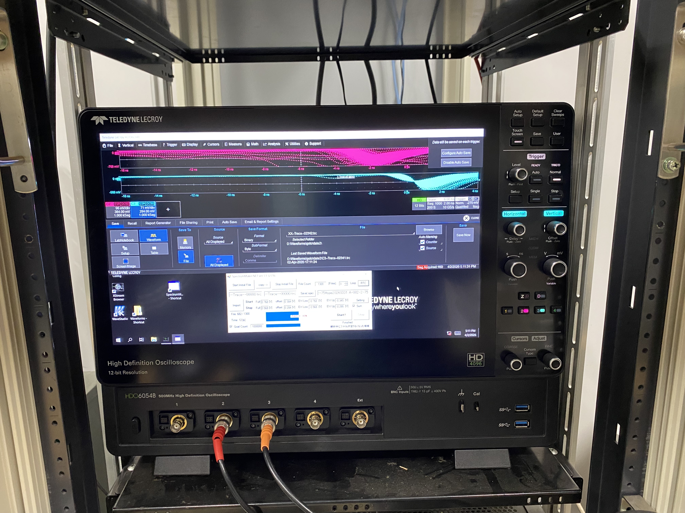
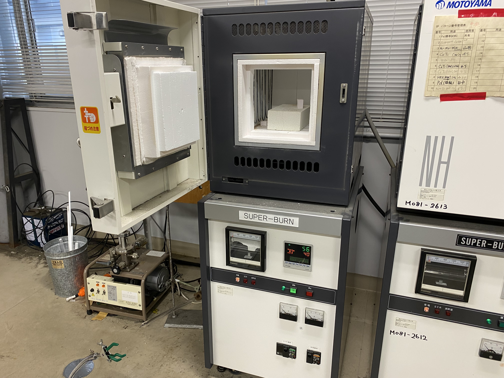
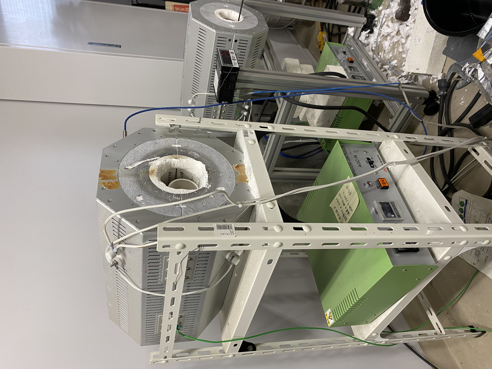
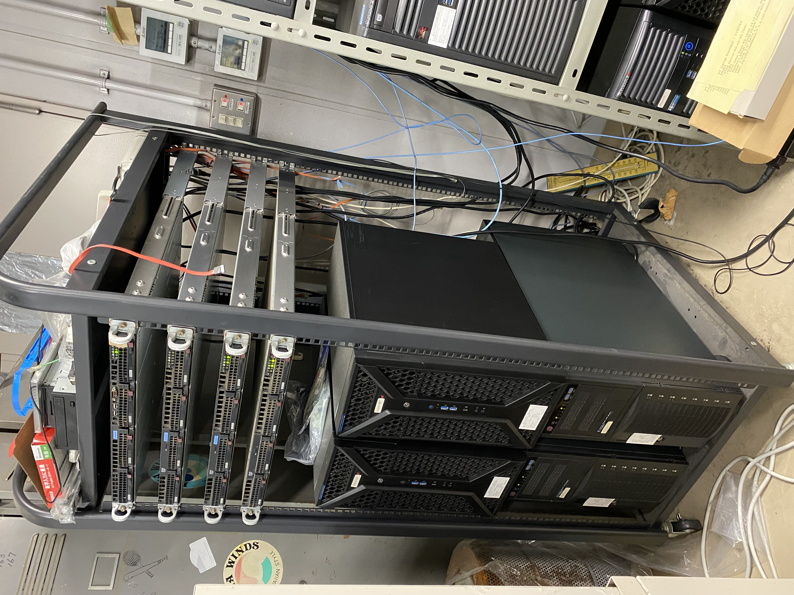

Gallery
研究風景・設備
研究室での実験や学会発表など、研究活動の様子をご紹介します。
研究設備・風景
画像をクリックすると拡大表示されます。

光電子増倍管
荒木研究室で注力している陽電子消滅法において、材料中の電子と陽電子が対消滅する際に放出されるγ（ガンマ）線を高感度に検出するための装置である。

オシロスコープ
検出器から送られてくる電気信号の波形を高精度に観測・解析する機器である。陽電子寿命法などにおいて、極めて短い時間スケールの現象を正確に測定するために用いられる。

スーパーバーン
金属や合金などの試料に対して熱処理を行うための高温炉である。研究テーマにあるような「炉冷」プロセスや「時効」処理を実施し、材料内部の溶質クラスタ形成や格子欠陥の状態を制御するために使用される。

電気炉
スーパーバーンと同様に、金属や合金などの試料に対して熱処理を行うための高温炉である。研究テーマにあるような「炉冷」プロセスや「時効」処理を実施し、材料内部の溶質クラスタ形成や格子欠陥の状態を制御するために使用される。

計算機（第一原理計算）
実験だけでなく、理論的なアプローチから材料特性を解明するための計算サーバー群である。第一原理計算やモンテカルロ計算、陽電子寿命の理論計算などを実行し、原子・電子レベルから格子欠陥や物性への影響を評価する。